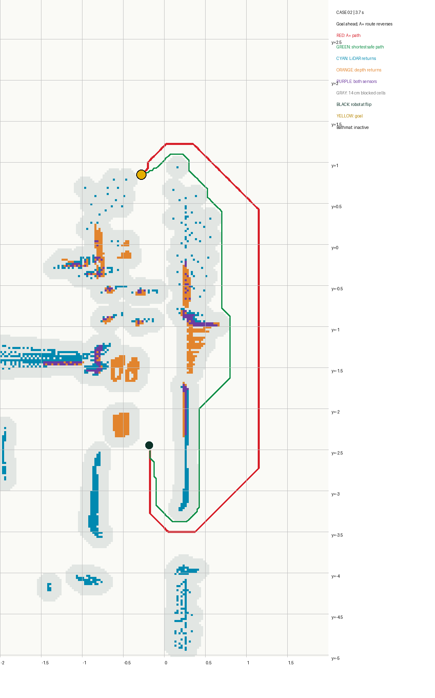
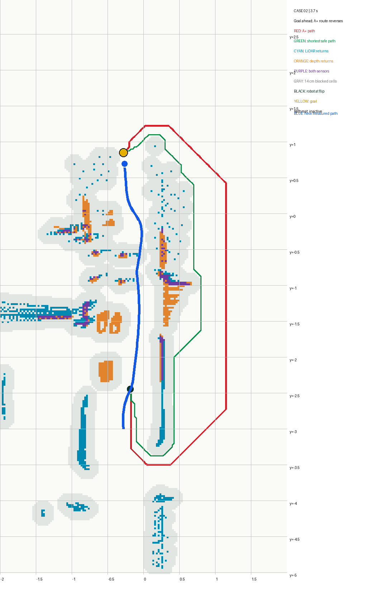
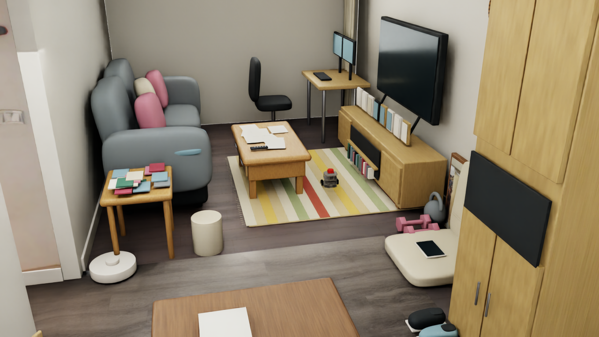

DEVLOG · 2026.09.26 · SPEED / DEBUG / LIVING ROOM
放开速度，
走进客厅。
前一轮已经确认：Gazebo 训练的 PPO 在 Isaac Sim 中确实执行了动作，却没有证明比原来的 A* 控制器更好。接下来，我先问小车究竟能以多快的速度直行，再用更快的混合控制重测走廊。第二组掉头时，我把传感器点、占据网格与规划路线画在一张图上，最后把测试延伸到客厅沙发旁和电脑桌下。
01 / SPEED
先测直线，再提高巡航速度。
走廊对照试验把线速度限制在 0.065 m/s，主要是为了先排查感知、规划和接触。它不是这辆车已经测出的物理极限。我希望在车头基本对准目标、路线也允许直行时更快，但不能只因为 Gazebo 里曾写过一个较大的速度数字，就直接拿来当 Isaac Sim 的安全速度。
在同一空旷场景里分别给车轮 3 秒直线指令，记录实际位移、横向漂移、车头角度和松开指令后的滑行。结果如下；“指令”是控制目标，“实测平均”才是车在这段仿真里真正跑出的速度。
| 直线指令 | 实测平均 | 横向误差 | 车头变化 | 停令后滑行 |
|---|---|---|---|---|
| 0.065 m/s | 0.055 m/s | 约 0.05 cm | 0.34° | 0.05 cm |
| 0.10 m/s | 0.090 m/s | 约 0.08 cm | 0.36° | 0.09 cm |
| 0.15 m/s | 0.140 m/s | 约 0.09 cm | 0.19° | 0.18 cm |
| 0.22 m/s | 0.208 m/s | 约 0.30 cm | 0.22° | 0.43 cm |
据此把最新的 Gazebo PPO 提议 + Isaac 地图审核／A* 接管方案的线速度上限设为 0.22 m/s。只有 PPO 请求较快前进、角速度很小且车头与路线基本一致时，控制器才把直行巡航提到这个上限；转弯、净空判断和必要接管仍保留。第一组走廊测试以这版配置在 22.7 秒到达，记录到 105 次 PPO 动作、8 次路线接管、接触力采样 0 N。旧版 0.065 m/s 的 66.9 秒与它可以看出速度量级差异，但巡航逻辑也变了，不能当作只改一个速度参数的严格对照。
这证明 0.22 m/s 在空旷直线测试中偏差可接受，并在一组走廊布局中完成导航；不代表所有障碍布局都已通过，也不是实体 NavBot 的最高安全速度。
02 / VISUAL DEBUG
它为什么突然向反方向转？
加速后的第二组暴露了更重要的问题。站在画面前，我看到机器人右侧沿走廊有一条直行通路，但它却转向后方。先后怀疑墙面、地垫和 PPO；逐步记录排除了简单的“PPO 自己想掉头”解释：转向来自安全层选择的 A* 路线。于是我把机器人翻转位置、目标、LiDAR 回波、深度障碍点、被车身包络挡住的网格和规划路径叠在一起。

第二组 3.7 秒：黑点是机器人，黄点是目标，红线是 A* 路线，绿线是另一条可行路径；青色为 LiDAR 点，橙色为深度点，灰色为按 14 cm 中心净空标出的不可通行区域。
放大查看诊断图 ↗{kind=link}
在这一帧，目标相对车头约在 +21.8°，A* 给出的局部方向却约为 −158.0°。图把“明明可以往前”与“地图判断前路受阻”之间的矛盾具体化了。地垫在这次诊断场景中没有参与碰撞，不能继续把掉头直接归咎于它。灰色区域也不是机器人的真实外形，而是障碍点按中心距离 14 cm 膨胀后的规划禁区；两侧障碍点和旧观测累积可能让通道在网格里显得比肉眼看到的窄。
后续测试同时把规划中心距离调到 12 cm，并让每次扫描重建当前 LiDAR 占据点，不再永久累积旧点。相同第二组在新版本中 21.9 秒到达目标，102 次 PPO 动作、7 次 A* 接管，接触力采样 0 N。因为这次一起改了两个因素，结果支持“过宽的禁区和旧点累积值得修正”，但不能单独证明是哪一项造成原掉头。

同一第二组布局的路线对比。我们保留失败记录，再用地图与路线图检验修改是否改变了行为。
03 / LIVING ROOM
从沙发旁，走到电脑桌下。
走廊之外，我想测试机器人能否在家具更复杂、路线会转弯的客厅里工作。第一段目标放在沙发旁，经过初期几次“地图无路”停车后，调整局部地图范围与感知处理，最终以 13.1 秒到达，57 次 PPO 动作、8 次 A* 接管。第二段从这个停点出发，把目标放在电脑桌下面的地面；椅子在场景中移开一些，给桌腿之间留下实际通路。

第二段实测画面：车已经进入客厅，在茶几和电视柜之间驶向桌下。
这次把地毯视为可碾过的低矮表面：测试层关闭地毯碰撞，并过滤它对应的低矮深度点，不把它作为接触失败对象。桌下区域最初两次因“地图无路”停车；缩短深度障碍的历史保留时间后，旧观测不再长时间堵住窄入口，第三次在 26.7 秒到达桌下目标，90 次执行 PPO、32 次 A* 路线接管，接触力采样 0 N。机器人视角复跑的第一次又在桌前报“地图无路”；改回成功测试的 5 Hz 取帧节奏后，复跑再次以 26.7 秒到达。两次结果都留在记录中，说明这个入口对地图时序仍敏感，不能写成“已经稳定通过所有客厅摆设”。
本次客厅试验采用仿真器真实位姿定位；地毯被显式设为可通行，未测试实体车轮实际爬过地毯边缘的能力。0 N 是离散接触力采样结果。
04 / ROBOT VIEW
换成小车的眼睛，再走一遍。
我在车身前方固定一台记录用 RGB 相机，沿用同一 PPO + Isaac 安全控制与桌下目标，让它拍下从沙发、茶几、地毯到电脑桌腿的实际行驶画面。它是展示用视角；控制器仍从 LiDAR 与原深度相机读取数据，没有把这台彩色相机画面送进 PPO。
机器人视角完整录像，按约 5 Hz 取帧；该次复跑到达桌下目标。画面末尾是桌下墙面与桌腿。
打开机器人视角视频 ↗05 / NEXT
下一步：训练 Isaac 原生 PPO。
这篇用的仍是 Gazebo 训练好的 PPO 权重，Isaac Sim 负责推理、建图和必要时接管。下一阶段想在 Isaac Lab 从头训练一套独立的避障 PPO，再回到 Isaac Sim 做相同场景评测。训练目标先收窄到“在可到达目标的走廊中独立避障”，暂不要求理解整套房间连接关系。
观测会给目标相对方向与距离、机器人运动状态，以及能区分前方低矮物体的扫描信息；动作由 PPO 输出受限的线速度和角速度。训练从单个障碍逐步增加到鞋、书、哑铃和随机摆位，奖励到达和持续接近目标，惩罚碰撞、原地打转与超时。验收时让新 PPO 单独运行，并在未见过的布局里与 Isaac-only、Gazebo PPO-only 和现有混合控制对照到达率、碰撞、时间与路径。这是计划中的新实验，不是本篇已经完成的训练结果。